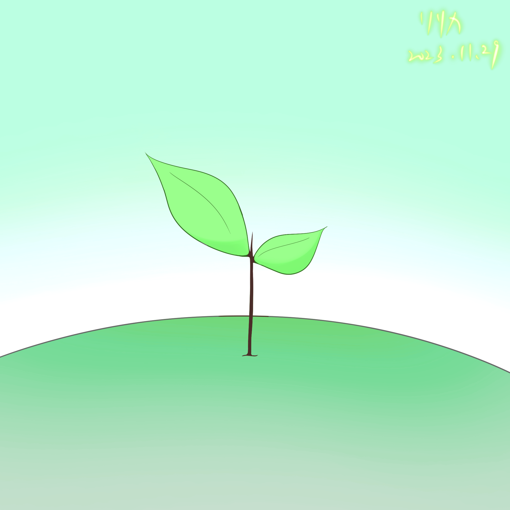

Interactive Designer & Game Developer
Ririka 范姜昱任
國立臺北科技大學 互動設計系
專長程式設計與遊戲設計，擅長使用 Unity 引擎開發互動體驗。 主要研究遊戲性設計及 UX 流程，多次擔任專題組長，善於團隊溝通協作。 日文檢定 N2，興趣為故事創作、唱歌及參與日本 ACG 文化活動。

Interactive Designer & Game Developer
國立臺北科技大學 互動設計系
專長程式設計與遊戲設計，擅長使用 Unity 引擎開發互動體驗。 主要研究遊戲性設計及 UX 流程，多次擔任專題組長，善於團隊溝通協作。 日文檢定 N2，興趣為故事創作、唱歌及參與日本 ACG 文化活動。
